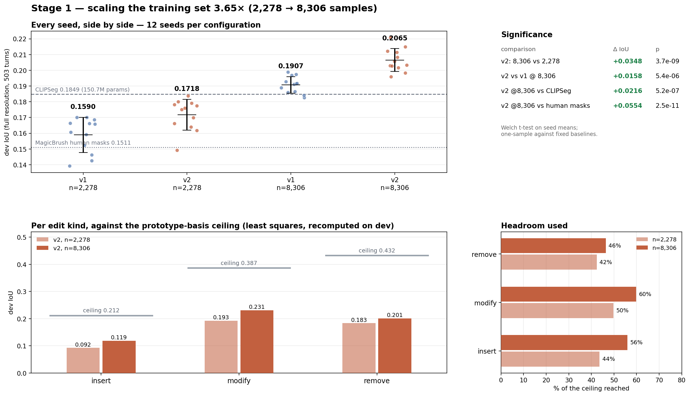
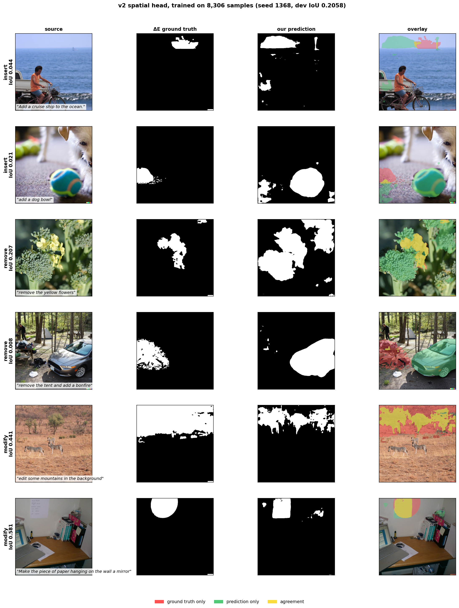
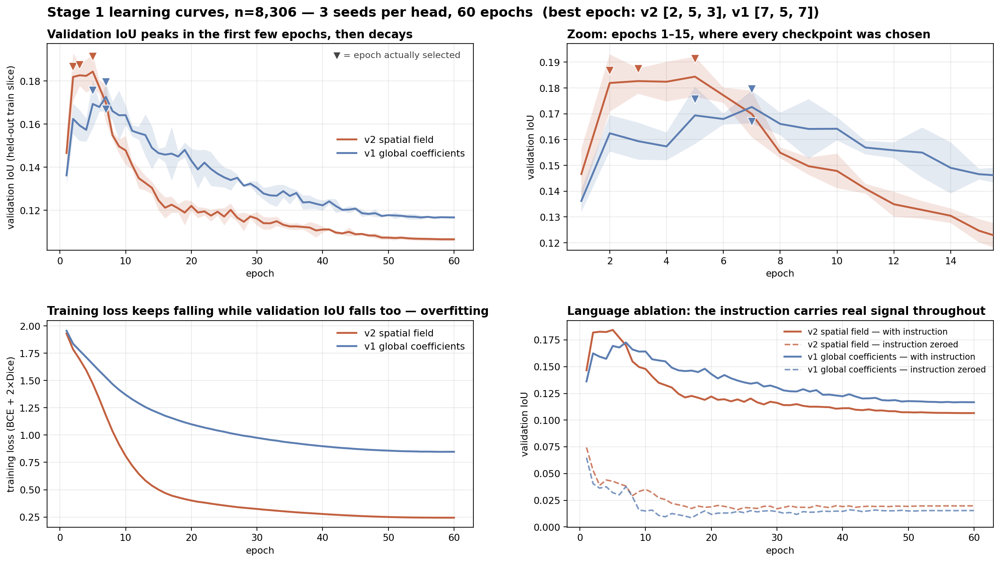
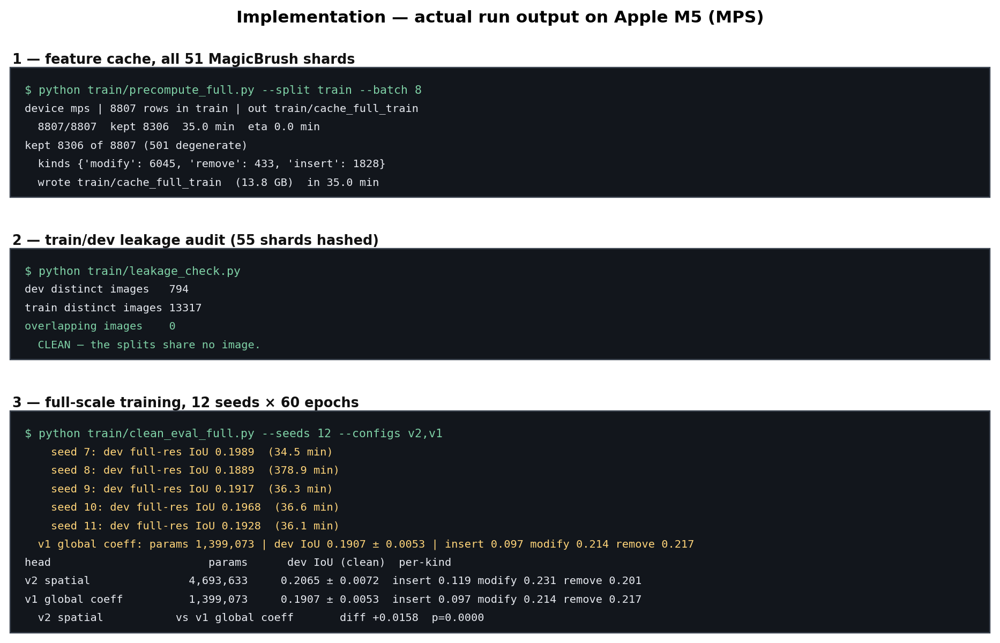

Technical Report · Foundations of Data Science · Review 1
A frozen-backbone edit-region predictor, measured against its own representational ceiling
Guide: Dr. Saranya M (54783) · School of Electronics Engineering, VIT Chennai
13 September 2026
Instruction-guided image editors apply a diffusion model to the whole frame and rely on the model to decide, implicitly, which pixels should change. Our base paper, AdaptEdit, makes that decision explicit with a learned MaskPredictor, and then names the failure it cannot solve in its own limitations section: edits that add an object where no source region exists. AdaptEdit never reports a mask IoU, and at 20.43 B frozen plus 5.0 B trainable parameters it cannot be reproduced on available hardware.
We therefore reimplement its mechanism at laptop scale and supply the measurement it omits. A 4.7 M head predicts a spatial field of coefficients over 32 frozen FastSAM prototypes, conditioned on a CLIP text embedding. Trained on 8,306 MagicBrush turns on a single Apple M5, it reaches IoU 0.2065 ± 0.0072 across 12 seeds on 503 held-out turns — ahead of CLIPSeg (0.1849, 150.7 M parameters) and of MagicBrush's own human annotations (0.1511), at 32× fewer trainable parameters and 10.3× lower per-instruction latency.
The contribution we regard as most useful is negative and quantitative. Fitting coefficients directly to ground truth by least squares bounds what any predictor can achieve with this basis: 0.212 for insertion against 0.433 for removal. Insertion — the case the project exists to address — has the lowest ceiling, because prototypes trained to segment objects span empty space poorly. We reach 56% of that ceiling. The remaining gap is representational, not statistical, and no amount of data closes it.
An instruction like “put a hat on the dog” names an object that is not in the image. There is no source region to point at, and every localization method that works by referring to what is visible fails on exactly this case.
Instruction-guided editors such as InstructPix2Pix take a source image and a sentence and return an edited image. Internally they denoise the entire frame; nothing constrains the change to the region the instruction is about. In practice this produces two distinct failures: the intended edit is applied weakly or not at all, and unrelated parts of the image drift — colour shifts, texture changes, small objects rearranged.
The obvious fix is to predict where the edit should happen and gate the editor to that region. This splits the task into two stages:
Stage 1 is the subject of this report; Stage 2 is measured in §9 to verify that Stage 1 is worth doing at all.
Our base paper is AdaptEdit (arXiv:2604.23763, April 2026). It adapts a frozen Qwen-Image-Edit diffusion transformer (20.43 B parameters) with Block Adapters (4.67 B), a Condition Encoder (351 M), a SpatialGate, and a region-aware loss weighted w = 1 + 2M̄ inside the predicted region. Localization is handled by a small MaskPredictor (7.8 M): a FiLM-modulated query-grid decoder trained with BCE + Dice.
The gap we address is the one AdaptEdit states about itself:
“Geometry-changing edits with no localized source region (‘put a hat on the dog’ where the dog has no hat)…”
Two properties of that paper shape everything we did. First, it is not reproducible on our hardware: 20.43 B frozen plus roughly 5.0 B trainable parameters is several orders of magnitude beyond a 26 GB laptop. Second, and more usefully, it never reports a mask IoU — the MaskPredictor is evaluated only through downstream image quality. The quality of the localization itself is unmeasured.
That second point defines our contribution. Rather than attempt a reproduction that would be a fiction, we reimplement the mechanism — text-conditioned mask prediction over frozen features — at a scale we can run honestly, and we measure the thing the base paper leaves unmeasured, including against its acknowledged failure case.
We take a YOLOv8x-seg / FastSAM backbone and freeze it. YOLACT-style instance segmentation produces two things we reuse directly: 32 mask prototypes at stride 4 (160 × 160 for a 640 × 640 input), and a 640-d image context vector from the SPPF layer. Prototypes are spatial basis functions; a segmentation mask is a linear combination of them passed through a sigmoid. Text is encoded by a frozen CLIP encoder to a 512-d embedding.
Nothing in either backbone is trained. Only the head that maps (text, context, prototypes) → mask is learned, which is what makes the whole experiment feasible on one laptop and what produces the parameter and latency advantages in §8.
The first head predicts a single 32-vector of coefficients per image–instruction pair, plus a bias. Text modulates the image context by FiLM, and an MLP emits the coefficients:
1,399,073 trainable parameters. The mask is one linear combination of prototypes applied uniformly across the frame.
The limitation of v1 is structural rather than one of capacity: a single coefficient vector means every location uses the same prototype mixture. A previous experiment (exp11) found v1 saturating at 1.4 M parameters, so width was never the constraint. v2 predicts a 20 × 20 field of coefficients, upsampled bilinearly to prototype resolution, retaining a global branch so the instruction can still set an overall prior:
4,693,633 trainable parameters. Different regions can now draw on different prototype mixtures. The hypothesis this tests is specific: a spatially varying combination should help most where the target region is not the extent of a single object — which is precisely the insertion case.
Training minimises BCE + 2 × Dice, with gradient-norm clipping at 1.0.
Targets are not MagicBrush's own masks. Measured across all 528 dev turns, those masks cover 62.4% of the frame against a real changed area of 10.3% — 9.1× too large, precision 15.8%, IoU 0.16 against the actual change, and worst for insertions at 11.9×. They are region-of-interest scribbles, not edit masks.
Instead we derive the target from the human-made source/target image pair by CIE76 ΔE in L*a*b*, thresholded and cleaned by connected components. This is the same measurement that exposed the coarseness, turned into supervision. Samples whose changed area falls outside 0.4%–45% are rejected as degenerate — too small to learn from, or a whole-frame restyle.
MagicBrush masks are bright = preserve, not bright = edit. Assuming the opposite produced recall 0.3% and IoU 0.001 before it was caught. We use their masks only as a sanity filter, never as a target.
MagicBrush, all 51 training shards and all 4 dev shards, 25 GB of parquet. Each row is a source image, a target image, an instruction, and a turn index; the dataset is multi-turn, so one photograph yields several successive edits.
| Split | Shards | Rows | Usable | Insert | Modify | Remove |
|---|---|---|---|---|---|---|
| train | 51 | 8,807 | 8,306 | 1,828 | 6,045 | 433 |
| dev (held out) | 4 | 528 | 503 | — | — | — |
501 train rows rejected as degenerate. Edit kind is assigned from the instruction's leading verb: put/add → insert, remove/delete → remove, otherwise modify. | ||||||
Because MagicBrush is multi-turn, a split partitioned by turn rather than by image would place the same photograph in both train and dev, and scaling the training set 3.65× would amplify any such contamination. We therefore hashed the raw encoded bytes of every source and target image on both sides before trusting any result:
| Quantity | Count |
|---|---|
| Distinct dev images | 794 |
| Distinct train images | 13,317 |
| Images appearing in both | 0 |
The splits share no image. This check was run before the results below were believed, not afterwards to defend them.
Every number in §6–§8 follows one protocol, held fixed so that the training-set size is the only variable that changes between the two scales:
torch, numpy, random and the MPS generator.Frozen features are precomputed once into memory-mapped arrays (13.8 GB for the full split), so an epoch touches only the head. This is what makes 24 seeded runs feasible.
| Group | Parameter | Value | Why this value |
|---|---|---|---|
| Supervision | ΔE metric | CIE76 in L*a*b* | perceptual, not raw RGB distance |
| ΔE threshold | 12.0 | chosen from a noise-robustness sweep; holds at σ=8 | |
| Morphological kernel | 5 × 5 | open then close, to solidify speckled regions | |
| Min component area | 40 px | ΔE is noisier per-pixel than grayscale differencing | |
| Sample filter | 0.4% – 45% | reject unlearnably small edits and whole-frame restyles | |
| Representation | Input resolution | 640 × 640 | backbone native |
| Prototypes | 32 at 160 × 160 | YOLACT stride-4 mask basis, frozen | |
| Image context | 640-d (SPPF) | frozen | |
| Text embedding | 512-d CLIP | frozen, L2-normalised | |
| Head (v2) | Coefficient grid | 20 × 20 → bilinear | spatially varying prototype mixture |
| Hidden width | 512 | v1 saturated at 1.4 M; width was never the constraint | |
| Dropout | 0.0 | swept; no benefit at this scale | |
| Optimisation | Optimiser | AdamW | — |
| Learning rate | 1 × 10⁻³, cosine to 0 | swept at n = 2,278 | |
| Weight decay | 0.01 | — | |
| Batch size | 32 | — | |
| Loss | BCE + 2 × Dice | Dice weight swept; 2.0 best | |
| Gradient clipping | norm 1.0 | — | |
| Evaluation | Epochs / selection | 60, best on train-val | dev never used for selection |
| Decision threshold | 0.5 fixed (§6.2) | set a priori; sensitivity analysed separately | |
| Seeds | 12 (1368, 1–11) | torch, numpy, random and MPS all seeded | |
| Baseline | CIDAS/clipseg-rd64-refined | the standard referring segmenter |
Contamination. An overnight script contained cp cache_all.pt cache_train.pt, where cache_all merged dev into train. The model had been trained on the evaluation set. It surfaced when a baseline scored 0.3743 against a training-time 0.1397 — a gap too large to be a metric difference. The 0.1397 headline and the associated “beats human annotation” claim were retracted and recomputed on a clean split.
Test-set epoch selection. An earlier evaluation chose the best epoch by dev IoU and concluded v2 was worse than v1 (0.1373 vs 0.1533). Selecting on train-val instead reverses the ordering, significantly. Test-set selection can invert a conclusion, not merely inflate it.
| Configuration | Trainable | n = 2,278 | n = 8,306 | Δ from data |
|---|---|---|---|---|
| v2 spatial field | 4,693,633 | 0.1718 ± 0.0099 | 0.2065 ± 0.0072 | +0.0347 |
| v1 global coefficients | 1,399,073 | 0.1590 ± 0.0111 | 0.1907 ± 0.0053 | +0.0317 |
| CLIPSeg (pretrained baseline) | 150,747,746 | 0.1849 | 0.1849 | — |
| MagicBrush human masks | — | 0.1511 | 0.1511 | — |
| Full frame (trivial) | 0 | 0.0958 | 0.0958 | — |
| Random centred box (trivial) | 0 | 0.0621 | 0.0621 | — |
| Comparison | Δ IoU | p |
|---|---|---|
| v2: 8,306 vs 2,278 samples | +0.0347 | 4.1 × 10⁻⁹ |
| v1: 8,306 vs 2,278 samples | +0.0317 | 1.5 × 10⁻⁷ |
| v2 vs v1 at n = 8,306 | +0.0158 | 5.4 × 10⁻⁶ |
| v2 vs CLIPSeg | +0.0216 | 5.2 × 10⁻⁷ |
| v1 vs CLIPSeg | +0.0058 | 2.9 × 10⁻³ |
| v2 vs MagicBrush human masks | +0.0554 | 2.5 × 10⁻¹¹ |

IoU alone hides the precision/recall trade-off: two models with identical IoU can behave quite differently, one timid and one over-eager. All four metrics, computed over the same 503 dev turns at the fixed 0.5 threshold:
| Head | IoU | Precision | Recall | F1 / Dice | Predicted area |
|---|---|---|---|---|---|
| v2 spatial | 0.2065 ± 0.0072 | 0.3126 ± 0.0084 | 0.3878 ± 0.0256 | 0.2976 | 11.70% |
| v1 global | 0.1907 ± 0.0053 | 0.2972 ± 0.0070 | 0.3510 ± 0.0209 | 0.2757 | — |
| 95% CI, v2 | [0.2019, 0.2111] | [0.3072, 0.3179] | [0.3716, 0.4041] | — | true: 9.58% |
| Cohen's d for v2 vs v1 on IoU is 2.50 — a large effect, not merely a significant one. Predicted area 11.70% against a true 9.58% shows the model over-predicts slightly at this threshold. | |||||
| Kind | IoU | Precision | Recall | F1 |
|---|---|---|---|---|
| modify | 0.2313 | 0.3455 | 0.4192 | 0.3285 |
| remove | 0.2007 | 0.3168 | 0.4263 | 0.2996 |
| insert | 0.1186 | 0.1923 | 0.2624 | 0.1852 |
The 0.5 operating point was fixed before evaluation. Sweeping it on dev shows IoU actually peaks near 0.3:
| Threshold | IoU | Precision | Recall | F1 | Predicted area |
|---|---|---|---|---|---|
| 0.1 | 0.2096 | 0.2393 | 0.6733 | 0.3124 | 30.12% |
| 0.2 | 0.2172 | 0.2637 | 0.5775 | 0.3185 | 22.74% |
| 0.3 | 0.2180 | 0.2818 | 0.5063 | 0.3166 | 18.10% |
| 0.4 | 0.2144 | 0.2975 | 0.4453 | 0.3097 | 14.60% |
| 0.5 (reported) | 0.2065 | 0.3126 | 0.3878 | 0.2976 | 11.70% |
| 0.7 | 0.1747 | 0.3458 | 0.2750 | 0.2532 | 6.90% |
| 0.9 | 0.1119 | 0.3705 | 0.1479 | 0.1658 | 2.74% |
Adopting 0.3 because the dev sweep says so would be test-set tuning — the same error that once inverted the v1/v2 ordering in this project (§5). So we selected the threshold per seed on the train-val slice, the same slice that chose the epoch, and applied it to dev once:
| Head | Thresholds chosen | Fixed 0.5 | Selected | Gain | p (paired) |
|---|---|---|---|---|---|
| v2 spatial | 0.3 ×7, 0.2 ×5 | 0.2065 ± 0.0072 | 0.2185 ± 0.0051 | +0.0120 | 2.9 × 10⁻⁷ |
| v1 global | 0.2 ×9, 0.3 ×3 | 0.1907 ± 0.0053 | 0.2092 ± 0.0038 | +0.0185 | 6.3 × 10⁻⁸ |
Under selected thresholds, insertion rises to 0.134 — 63% of its ceiling — and v2 reaches 0.2185 (+0.0336 over CLIPSeg, p = 1.3 × 10⁻¹⁰).
The v2 advantage shrinks. With both heads at their own selected thresholds the gap narrows from +0.0158 to +0.0093 (p = 5.8 × 10⁻⁵). Part of v2's edge at a fixed 0.5 was simply that 0.5 happened to suit it better. It remains significant, but it is smaller than the fixed-threshold comparison implies.
The baseline was not given the same treatment. CLIPSeg is evaluated at its default operating point, so a tuned-threshold comparison tilts toward us. For that reason we keep the fixed-0.5 result (0.2065, +0.0216) as the headline — it is the conservative number — and present the selected-threshold result as a secondary analysis.
It would be convenient to attribute the result to the spatial head. The measurements do not support that reading. Both heads gained almost the same absolute amount from more data (v1 +0.0317, v2 +0.0347), and v1 at 8,306 samples also clears CLIPSeg (+0.0058, p = 2.9 × 10⁻³). The architecture contributes a real and significant +0.0158 on top, but the larger single factor is the training set.
| Kind | v2 | v1 | Ceiling | v2 % of ceiling | v1 % of ceiling |
|---|---|---|---|---|---|
| insert | 0.1186 | 0.0972 | 0.2119 | 56.0% | 45.9% |
| modify | 0.2313 | 0.2143 | 0.3867 | 59.8% | 55.4% |
| remove | 0.2007 | 0.2166 | 0.4325 | 46.4% | 50.1% |
v2 wins insertion (+22% relative) and modification (+8%), and loses removal (−7%). This is the hypothesis of §3.3 behaving as predicted rather than a uniform improvement. Removal targets an object that already exists in the frame, which is exactly what a global coefficient over object-shaped prototypes already describes well; the spatial field adds capacity that is not needed there and costs precision. The field earns its keep where there is no source object to point at.

This is the result we consider most useful, and it is a negative one.
To separate “the model has not learned this yet” from “this basis cannot express it”, we fit coefficients directly to the ground-truth mask by least squares. No learning is involved. The result is an upper bound on the IoU that any coefficient predictor could achieve with these 32 prototypes.
| Kind | Ceiling IoU | v2 achieved | Fraction reached |
|---|---|---|---|
| remove | 0.4325 | 0.2007 | 46.4% |
| modify | 0.3867 | 0.2313 | 59.8% |
| insert | 0.2119 | 0.1186 | 56.0% |
The ceiling for insertion is less than half that for removal. The architecture was originally justified on the reasoning that “prototypes are spatial basis functions, not objects, so a text-derived combination can describe empty space.” That reasoning is wrong, and this measurement refutes it. FastSAM's prototypes were trained to segment objects and carry that bias: they span object-shaped regions roughly twice as well as they span empty space. The mechanism is weakest precisely in the case it was adopted to solve.
A companion experiment tested whether the shortfall was simply a lack of insertion data. Trained per-kind at matched sample counts, insertion reached 0.0450 against 0.1568 for modification on the same 497 samples — 3.5× worse given identical data volume. Data volume is not the constraint.
That per-kind test ran at roughly 500 insertion samples and concluded more data would not help insertion. There are now 1,828, and insertion moved from 44% to 56% of its ceiling. The ceiling itself is real and unmoved; we were simply far below it. The claim that survives is “the basis caps insertion at 0.212”, not “data does not help insertion.”
An attempt to raise the ceiling by appending hand-designed free-space basis functions to the prototype set was rejected by its own control: the geometric basis beat neither a random basis of equal size (+0.0035, p = 0.33) nor plain v2 (−0.0030, p = 0.47). It was dropped. Any gain must beat a random basis of the same dimensionality, and this one did not.

| Head | Best epochs | Peak val IoU | At epoch 60 | Loss in IoU |
|---|---|---|---|---|
| v2 spatial | 2, 5, 3 | 0.1884 | 0.1066 | −43% |
| v1 global | 7, 5, 7 | 0.1740 | 0.1167 | −33% |
Training loss falls monotonically for all 60 epochs while validation IoU roughly halves, so this is overfitting rather than an optimisation failure. Selecting the checkpoint on a held-out slice of train is what kept every number in this report honest — training to the final epoch would have reported about half the IoU. v2 also leads v1 at the peak, so its advantage is not an artefact of selection.
The practical consequence is that 60 epochs is roughly 6× more than needed; about 10 would reach the same checkpoint. We report this because it makes any further experiment on this pipeline substantially cheaper.
Zeroing the text embedding at every epoch, on the same checkpoint, collapses validation IoU from 0.188 to roughly 0.03 — a gap of +0.158 for v2 and +0.153 for v1 at the peak. The head is reading the instruction, not exploiting an image prior. This control matters because an early version of the pipeline selected epoch-1 blob predictors that scored ~0.14 by covering 20% of the frame and scored identically with the instruction zeroed; checkpoint selection was changed to optimise this delta rather than raw IoU.
A separate three-seed run, launched independently with per-epoch logging, reproduced its dev IoU exactly for all six runs: v2 at 0.2058 / 0.1983 / 0.2034 and v1 at 0.1911 / 0.1859 / 0.1827, matching the corresponding seeds of the twelve-seed run to four decimal places.
| Model | Trainable | Per image | Per instruction | Speed-up | Params |
|---|---|---|---|---|---|
| v2 spatial | 4,693,633 | 33.6 ms | 5.30 ms | 10.3× | 32.1× fewer |
| v1 global | 1,399,073 | 33.8 ms | 5.39 ms | 10.1× | 107.7× fewer |
| CLIPSeg | 150,747,746 | — | 54.3 ms | 1× | — |
| v2 costs essentially nothing extra over v1 at inference: its additional parameters sit in a small MLP and convolution over a 20 × 20 grid, negligible beside the prototype weighted sum. | |||||
The advantage is structural rather than an implementation detail. Our architecture splits into a per-image stage (frozen backbone → 32 prototypes) and a per-instruction stage (CLIP text encode, a small MLP, a weighted sum). CLIPSeg re-runs a full 150 M encoder–decoder for every instruction and has no such split available. Editing is an iterative activity — a user issues several instructions against one image — so the amortised cost is the one that matters.
At our operating resolution of 640 px the backbone costs 98.4 ms and the break-even point is N ≈ 2 instructions; at the matched 352 px both stages are cheaper and we are ahead even at N = 1. We report the matched figure for the per-instruction comparison and note explicitly that our accuracy at 352 px is unmeasured — all IoU numbers in this report are at 640 px.
A mask metric is only a proxy. This experiment closes the loop and tests the project's central premise directly. One editor (InstructPix2Pix) produces the edit for every arm; the only thing that varies is which mask gates the result back onto the source, so any difference is attributable to the mask alone. 60 held-out dev samples.
recall is the fraction of the true edit region that changed; collateral the fraction of outside-region pixels that changed; net = recall − collateral.
| Gating mask | Recall ↑ | Collateral ↓ | Net ↑ |
|---|---|---|---|
| None — whole frame (status quo) | 33.3% | 24.2% | +9.1% |
| Ours, as predicted | 7.5% | 1.5% | +6.0% |
| Ours, tuned (thr 0.2, dilate 64 px) | 22.9% | 8.8% | +14.2% |
| MagicBrush human mask | 31.5% | 13.0% | +18.5% |
| Ground-truth region (oracle) | 30.2% | 0.1% | +30.1% |
The premise holds. Editing inside the correct region is worth 3.3× — +30.1% against +9.1% for whole-frame editing. This is direct evidence that localization pays off downstream and not merely on a mask metric.
Our mask was precision-biased, and that was fixable. As predicted it produced only 1.5% collateral but 7.5% recall: gating discarded most of the edit, and net fell below whole-frame editing. Dilation trades precision for recall. Swept to 200 px across two thresholds, net peaks at 64 px (+14.2%) and declines monotonically beyond it — 96 px +14.1%, 128 px +13.8%, 160 px +13.2%, 200 px +12.3% — so 64 px is a true optimum rather than the edge of the search.
Coarse supervision costs at the editing stage too. The MagicBrush mask, 9.1× too large, carries 13.0% collateral and loses 11.6 points of net against the ground-truth region. The cost of that supervision is not confined to the mask metric; it propagates into the edited image.
Our tuned mask beats whole-frame editing but does not beat the MagicBrush human mask (+14.2% vs +18.5%). Their masks are far too large yet retain more of the edit. Closing that gap requires raising recall without reintroducing collateral, which is the same representational problem as §7 seen from the other end. Caveats: 60 samples, one editor, one guidance setting.
A 4.7 M head over entirely frozen features predicts edit regions better than a 150.7 M pretrained referring segmenter and better than the dataset's own human annotations, at 32× fewer trainable parameters and 10.3× lower per-instruction latency, trained end to end on a single laptop. Localization is worth 3.3× downstream, which validates the two-stage premise.
The honest headline, though, is the bound. Insertion — the case our base paper names as its own limitation and the case this project exists to address — is capped at 0.212 by a prototype basis trained to segment objects rather than to describe empty space. We closed part of the gap to that bound with data; we did not move the bound.
The work that follows from this is therefore specific rather than general:
All results were produced on one machine: Apple M5, 10 cores, 26 GB unified memory, macOS 26.6.2, PyTorch 2.13.0 on the MPS backend, NumPy 2.2.6, OpenCV 5.0.0, Ultralytics 8.3.209, SciPy 1.15.3.
python train/precompute_full.py --split train --batch 8 # 35.0 min → 8,306 samples, 13.8 GB python train/leakage_check.py # 0 overlapping images python train/clean_eval_full.py --seeds 12 --configs v2,v1 # ~9 h, 12 seeds each python train/clean_eval_full.py --seeds 3 --configs v2,v1 --curves python train/latency_v2.py # both heads, matched resolution python train/plots_full.py && python train/curve_plots.py

Measured wall times: feature precompute over 8,807 rows, 35.0 min; leakage audit over 55 shards, ~9 min; v2 training, 37–40 min per seed; v1 training, ~32 min per seed. Roughly 21 hours of compute in total.